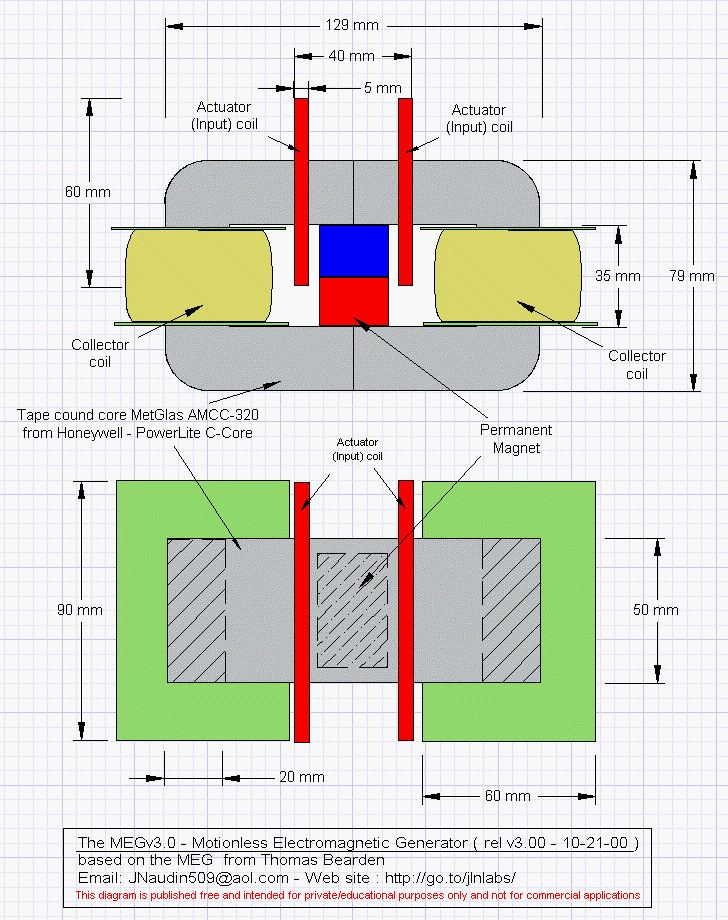
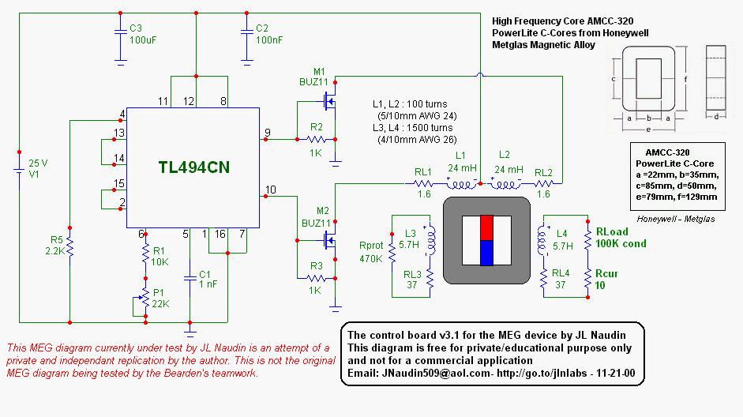
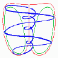

MEG-Diskurse-
 
>Der Magnet spielt den 'Excenter', liefert die Asymmetrie (sogenannte "eingeklemmte Pole" ), der mal links rum, mal rechts rum zeigt, bzw. abgesperrt wird. Jeder Magnet ist ein Tornado: Hier in den Animationen sieht man es gut. In der Mitte (innen wiedermal, der Magnet selbst ist das) alles hoch, auen alles runter, hier gebndelt im Weicheisen.  Jeder Magnet hat diesen "Auen"-Rckweg der Feldlinien, normalerweise in der Luft. Im Auen-Kreis wird ber die rechte Spule ausgekoppelt, whrend der Verdichtung, wenn die Steuerspulen die rechte Seite freigeben und die Magnetlinien am ausbreiten sind. Die linke Seite hat zu dieser Zeit nichts mehr vom Magneten drin, dafr aber die von der linken Spule induzierte magnetische Feldstrke in Gegenrichtung. In der anderen Hlfte, wenn es links runter geht wegen der Magnetzuschaltung, wrde die rechte Spule auch in Gegenrichtung ihre Induktion einspeisen - wenn sie knnte, aber ber die Last ist alles schon abgeflossen. Der Magnet wird auf diese Weise leer gesogen, ohne seine Struktur zu zerstren: In der Mitte steht immer alles in der richtigen Richtung bezglich dem Hauptflu. Seine Struktur ist primr fr das Feld, also bleibt es erhalten. Die Quelle ? Was ist denn immer die Quelle eines Magneten ? Der Magnet ist nur ein kristallines Atom. Jedes Atom ist ein Tornado und hat eine Quelle, zu jeder Zeit hngt es an ihr. An dieser Quelle hngt auch die MEG. So, das war ich. Heute ist HDR hier und er hat folgende Meinung: Das "Leergesogen" ist bertrieben, es mte dann viel mehr Ausbeute sein. Vielmehr ist das Weicheisen die ganze Zeit fast voll gesttigt vom Magneten, und nur Fluktuationen im Sttigungsbereich bringen den kleinen Effekt. In diesem Sinne mte sogar ein schwcherer Magnet, oder ein Magnet mit Luftspalt zum Kern, oder sogar ein Luftspalt im Kern, wie etwa ein Papierstreifen zwischen den beiden Hlften, zu einem besseren Ergebnis fhren. HDR MfG neu gefundene Links:
Meine Email-Adresse: info@aladin24.de |